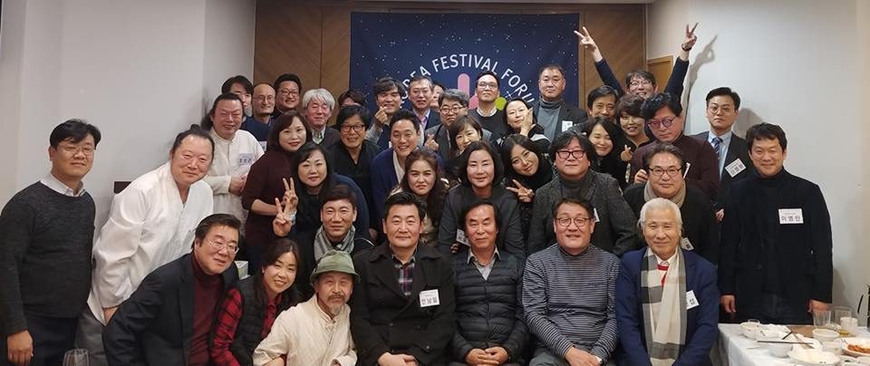

한국축제포럼
소개
설 립 취 지
인류의 역사는 축제로부터 시작되었습니다. 그 민족의 축제가 사라지면 그 나라는 멸망합니다. 우리 민족의 뿌리는 신시의 축제에서부터 시작하여 수천 년을 이어 오다 조선시대에 철저한 사대주의와 유교 이념의 통치로 숨을 죽여야 했고, 일제 강점기에는 맥이 끊기다시피 하였습니다. 쉽게 말해서 이 나라의 운명이 다 했던 것입니다. 그런 축제가 지방자치제 부활과 함께 겨우 어설프게나마 싹을 내 밀었고, 거기에 많은 지도와 격려가 필요한 시기에 정부에서는 축제를 축소 통합 정비와 감사의 대상으로 삼았습니다. 여기에서 우리나라의 축제는 또 한 번 숨을 죽이고 가야 했고, 국가에 어려운 일이 있으면 제일 먼저 정을 맞는 모난 돌이 되고 말았습니다. 선진국의 축제가 얼마나 많고, 그 것이 국민의 행복과 국가 산업에 어떤 영향을 미치는지에 대해서 연구하고 그것을 정책에 반영하는 노력이 부족하였습니다. 관광 대국을 지향하면서 관광객이 가장 선호하는 축제산업을 다양하게 육성하려 하지 않고, 획일화하는데 중점을 두었습니다. 국제 경쟁력을 갖춘 축제를 원하면서, 지역에 축제가 뿌리 내릴 수 있도록 토양을 비옥 하게 만들지 못했습니다. 축제 재정에 대한 국가 지원을 확대하지 못하면서, 지역의 축제 재정자립도 제고를 위한 정책 지원으로 보완 해주지 못하였습니다. 콘텐츠 산업의 발전과 문화 융복합을 통한 국가 발전을 추구하면서, 다양한 콘텐츠와 문화가 융복합하는 최일선인 축제 현장을 최첨단 산업의 현장으로 인식하지 못하였습니다. 우리 한국축제포럼은 지난 2013. 3. 27 발족하여 현재까지 50여회의 포럼과 축제 현장 답사를 통하여 우리 축제의 나아갈 길을 찾는 노력을 해 왔습니다. 다양한 분야의 축제 현장 전문가와 학계의 전문가가 함께 모여 축제에 관한 여러 가지 문제 해결과 발전방안을 연구하고, 즐기고, 실행하여 왔습니다. 그 동안의 노력을 바탕으로 우리 축제의 정체성 확립과 효율적인 발전을 통하여 축제가 지역 주민의 삶의 활력소가 되게 하고, 지역의 문화 예술과 경제 성장의 원동력이 되게 함으로써 지역 문화 복지에 기여하고, 축제 산업 국제경쟁력 강화의 첨병이 되고자 합니다. 축제 산업은 지역 주민의 꿈과 상상력을 바탕으로 성장합니다. 그 꿈나무가 잘 성장해야 나라와 민족이 성장하고 행복해 질 수 있습니다. 우리는 그 꿈이 뿌리 내리고 성장하여 열매 맺을 수 있도록 함께 하고자 합니다.
회장인사말
 안녕하세요.
사단법인 한국축제포럼 회장 안남일입니다.
저희 홈페이지를 방문해 주신 여러분 반갑습니다. 그리고 감사합니다.
안녕하세요.
사단법인 한국축제포럼 회장 안남일입니다.
저희 홈페이지를 방문해 주신 여러분 반갑습니다. 그리고 감사합니다.
저희 사단법인 한국축제포럼은 2013년 3월 축제를 사랑하고 축제의 발전을 도모하려는 사람들이 모여 ‘축제연구포럼’으로 출발해서 2016년 6월 ‘사단법인 한국축제포럼’으로 성장하여 지금에 이르고 있습니다.
현재까지 매월 학술세미나와 축제현장탐방을 통하여 축제의 나아갈 길을 찾는 노력을 지속적으로 해 오고 있습니다. 다양한 분야의 축제 현장 전문가와 학계의 전문가가 함께 모여 축제를 기획, 실행하고 여러 가지 문제 해결과 발전방안을 연구해 왔습니다.
저희 사단법인 한국축제포럼은 우리나라 축제의 정체성 확립과 효율적인 발전을 통하여 축제가 지역 주민의 삶의 활력소가 되게 하고, 지역의 문화예술과 경제성장의 원동력이 되게 함으로써 지역문화복지에 기여하고, 축제산업의 국제경쟁력 강화의 첨병이 되고자 합니다. 축제 산업은 지역 주민의 꿈과 상상력을 바탕으로 성장합니다. 그 꿈나무가 잘 성장해야 나라와 민족이 성장하고 행복해 질 수 있습니다. 저희 사단법인 한국축제포럼은 그 꿈이 뿌리 내리고 성장하여 열매 맺을 수 있기까지 최선의 노력을 다하고자 합니다.
저희 사단법인 한국축제포럼의 활동이 우리나라 축제의 더 나은 미래에 대한 비전을 만들고 축제를 사랑하는 분들과의 참여와 연대를 통해 축제의 저변을 확장하는데 기여할 수 있도록 뜻과 지혜를 모아 나가겠습니다.
여러분의 따뜻한 관심과 격려, 그리고 동행(同行)을 부탁드립니다.
사단법인 한국축제포럼 회장
조직구성
| 성명 | 직위 | 설명 |
|---|---|---|
| 김웅래 | 고문 | |
| 김승욱 | 고문 | |
| 이원석 | 고문 | |
| 최유진 | 고문 | |
| 탁경국 | 고문 | |
| 조성재 | 고문 | |
| 전경수 | 고문 | |
| 전상직 | 고문 | |
| 김정환 | 명예회장 | |
| 안남일 | 회장 | |
| 소달영 | 수석부회장 | |
| 김영애 | 부회장 | |
| 박득수 | 부회장 | |
| 최성수 | 홍보대사 | |
| 김정우 | 학술교육 | 분과위원회 |
| 유병훈 | 대외협력 | 분과위원회 |
| 오석규 | 청년 | 분과위원회 |
| 이순애 | 홍보 | 분과위원회 |
| 송미선 | 공연애술 | 분과위원회 |
| 유재언 | 서울 | 전국지회 |
| 강석정 | 경기 | 전국지회 |
| 전수철 | 인천 | 전국지회 |
| 신현식 | 강원 | 전국지회 |
| 신백수 | 충북 | 전국지회 |
| 서은숙 | 충남 | 전국지회 |
| 이명민 | 광주 | 전국지회 |
| 김승겸 | 전북 | 전국지회 |
| 이승래 | 전남 | 전국지회 |
| 이철우 | 부산 | 전국지회 |
| 장태호 | 울산 | 전국지회 |
| 김영탁 | 경북 | 전국지회 |
| 이진상 | 경남 | 전국지회 |
| 이진상 | 경남 | 전국지회 |
| 박승규 | 제주 | 전국지회 |
| 김병호 | 감사 | |
| 지정열 | 감사 | |
| 김명기 | 평이사 | |
| 김소영 | 평이사 | |
| 김한겸 | 평이사 | |
| 백성우 | 평이사 | |
| 서유영 | 평이사 | |
| 유동환 | 평이사 | |
| 정연길 | 평이사 | |
| 정연길 | 상임이사 | |
| 전문위원 | 73명 | |
| 2019-06-29 기준 | ||
연혁
학술세미나
- 2019년 학술세미나(제67회~)
- 2018년 학술세미나(제56회~제66회)
- 2017년 학술세미나(제43회~제55회)
- 2016년 학술세미나(제32회~제42회)
- 2015년 학술세미나(제21회~제31회)
- 2014년 학술세미나(제9회~제20회)
- 2013년 학술세미나(제1회~제8회)
한국축제아카데미
- 제6기 한국축제아카데미(2019.2.11.~2.22
- 제5기 한국축제아카데미(2018.7.2.~7.13)
- 제4기 한국축제아카데미(2018.1.29.~2.9)
- 제3기 한국축제아카데미(2017.8.14.~8.25)
- 제2기 한국축제아카데미(2017.2.6.~2.17)
- 제1기 한국축제아카데미(2016.8.16.~8.26)
당부말씀
현재 한국에서의 축제연구에 대한 위상은 관광학에서 바라보는 관점이 가장 높습니다. 그러다보니 지역경제의 활성화와 축제참가자가 몇명이냐라는 딜레머에 빠졌습니다. 결국 같은색깔의 다른축제, 같은이름의 다른장소, 같은 콘텐츠 , 그러나 축제는 숫자놀음이 결코아닙니다. 지역만이 가지고 있는 고유성이 내포되어있어야 합니다. 그러기에 인문학, 문화인류학적, 민속학, 무속학, 그리고 다양한 문화예술의 인접으로 접근이 필요합니다. 축제를 연구하고, 축제를 연출해왔던 기획자, 연구자들이 현재의 축제를 고민하고자 합니다. 그러기에 축제의 여러 양상에 대한 연구를 통해 축제의 올바른 방향정립과 축제의 발전 방안 제시를 위해 2013년 3월에 축제학자와 축제연출가, 축제 주최자, 축제기획자 그리고 문화예술관련자들이 뜻을 모아 발족하였고 지금까지 매달 포럼을 개최해왔습니다. 축제연구포럼은 온라인(페이스북)에서의 커뮤니케이션이기도 하지만 매달 한번씩 관련학자들과 축제전문가들이 모여 축제의 제현상을 연구하는 오프모임이기도 합니다. 따라서 매달 모임은 필수 입니다. 그룹에 가입만하고 포럼에 나오지 않는분들은 가입을 자제해주시길 바랍니다. 가입신청자는 다음의 사항을 준수바랍니다. 첫째, 자신의 개인정보가 없으면 가입을 불허 합니다. 둘째, 사진이 없으신 분 역시 가입을 불허 합니다. 셋째, 가입신청 시 관리자에게 가입을 원하는 메시지를 주시기 바랍니다. 넷째, 가입 후 가입인사(자기소개)를 해주시기 바랍니다. 다섯째, 가입 후 회원 간 커뮤니케이션을 해주시기 바랍니다. 여섯째, 매달모이는 오프 포럼에 참가해주시기 바랍니다. 일곱째, 가입 후 회원 간의 소통이 없으신 분들은 정리될 수 있습니다.
사진
숙제하듯 살지 말고 축제하듯 살아가자
